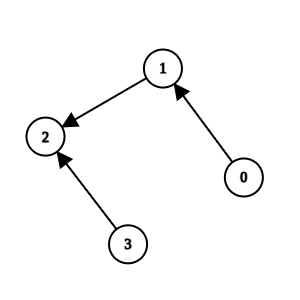
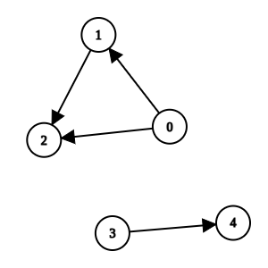
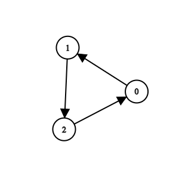

| Category | Difficulty | Likes | Dislikes |
|---|---|---|---|
| Algorithms | Medium | 155 | 57 |
You are maintaining a project that has n methods numbered from 0 to n - 1.
You are given two integers n and k, and a 2D integer array invocations, where invocations[i] = [ai, bi] indicates that method ai invokes method bi.
There is a known bug in method k. Method k, along with any method invoked by it, either directly or indirectly, are considered suspicious and we aim to remove them.
A group of methods can only be removed if no method outside the group invokes any methods within it.
Return an array containing all the remaining methods after removing all the suspicious methods. You may return the answer in any order. If it is not possible to remove all the suspicious methods, none should be removed.
Example 1:
Input: n = 4, k = 1, invocations = [[1,2],[0,1],[3,2]]
Output: [0,1,2,3]
Explanation:

Method 2 and method 1 are suspicious, but they are directly invoked by methods 3 and 0, which are not suspicious. We return all elements without removing anything.
Example 2:
Input: n = 5, k = 0, invocations = [[1,2],[0,2],[0,1],[3,4]]
Output: [3,4]
Explanation:

Methods 0, 1, and 2 are suspicious and they are not directly invoked by any other method. We can remove them.
Example 3:
Input: n = 3, k = 2, invocations = [[1,2],[0,1],[2,0]]
Output: []
Explanation:

All methods are suspicious. We can remove them.
Constraints:
1 <= n <= 1050 <= k <= n - 10 <= invocations.length <= 2 * 105invocations[i] == [ai, bi]0 <= ai, bi <= n - 1ai != biinvocations[i] != invocations[j]